<!DOCTYPE html>
<html lang="en">
<head>
    <meta charset="UTF-8">
    <title>Title</title>
</head>
<body>

</body>
</html><!DOCTYPE html>
<html lang="en">
<head>
    <meta charset="UTF-8">
    <meta name="viewport" content="width=device-width, initial-scale=1.0">
    <title>BiCLIP: Domain Canonicalization</title>

    <meta name="description" content="BiCLIP: Domain Canonicalization via Structured Geometric Transformation.">
    <meta name="keywords" content="Computer Vision, CLIP, Domain Adaptation, Bilinear Transformation">
    <meta name="author" content="Pranav Mantini">

    <link rel="stylesheet" href="style.css">
    <link href="https://fonts.googleapis.com/css2?family=Noto+Sans:wght@300;400;700&display=swap" rel="stylesheet">
</head>
<body>

    <header>
        <h1>BiCLIP: Domain Canonicalization via Structured Geometric Transformation</h1>
        <div class="authors">
            <p><strong>Pranav Mantini<sup>*</sup>, Shishir K. Shah<sup>+</sup></strong></p>
            <p><sup>*</sup>University of Houston, <sup>+</sup>The University of Oklahoma</p>
        </div>
        <div class="links">
            <a href="https://arxiv.org/abs/2603.08942" class="btn">Paper (arXiv)</a>
            <a href="https://github.com/QuantitativeImagingLaboratory/BilinearCLIP" class="btn">Code (GitHub)</a>
        </div>
    </header>

    <main>

        <div class="video-wrapper">
            <video autoplay loop muted playsinline class="teaser-video">
                <source src="assets/biclip.mp4" type="video/mp4">
            </video>
            <p class="caption">BiCLIP realigns visual features to the textual manifold.</p>
        </div>

        <style>
        .video-wrapper {
            text-align: center;
            margin: 30px 0;
        }
        .teaser-video {
            width: 100%;
            max-width: 800px;
            border-radius: 10px;
            box-shadow: 0 10px 30px rgba(0,0,0,0.15);
        }
        </style>

        <section id="abstract">
            <h2>Abstract</h2>
            <hr>
            <p>We present BiCLIP, a novel approach for few-shot domain adaptation. By utilizing a structured geometric transformation via an upper-triangular matrix, BiCLIP achieves superior canonicalization across diverse datasets...</p>
             <details class="abstract-dropdown">
                <summary class="abstract-dropdown-summary">Full Abstract</summary>
                <div class="abstract-dropdown-content">
                    <p>
                        Recent advances in vision-language models (VLMs) have demonstrated remarkable zero-shot capabilities, yet adapting these models to specialized domains remains a significant challenge. Building on recent theoretical insights suggesting that independently trained VLMs are related by a canonical transformation, we extend this understanding to the concept of domains. We hypothesize that image features across disparate domains are related by a canonicalized geometric transformation that can be recovered using a small set of anchors. Few-shot classification provides a natural setting for this alignment, as the limited labeled samples serve as the anchors required to estimate this transformation. Motivated by this hypothesis, we introduce BiCLIP, a framework that applies a targeted transformation to multimodal features to enhance cross-modal alignment. Our approach is characterized by its extreme simplicity and low parameter footprint. Extensive evaluations across 11 standard benchmarks, including EuroSAT, DTD, and FGVCAircraft, demonstrate that BiCLIP consistently achieves state-of-the-art results. Furthermore, we provide empirical verification of existing geometric findings by analyzing the orthogonality and angular distribution of the learned transformations, confirming that structured alignment is the key to robust domain adaptation. Code is available at this <a href="https://github.com/QuantitativeImagingLaboratory/BilinearCLIP">https URL</a>
                    </p>
                </div>
            </details>
        </section>

        <section id="methodology">
            <h2>Methodology: BiCLIP</h2>
            <hr>

            <div class="method-diagram-container">
                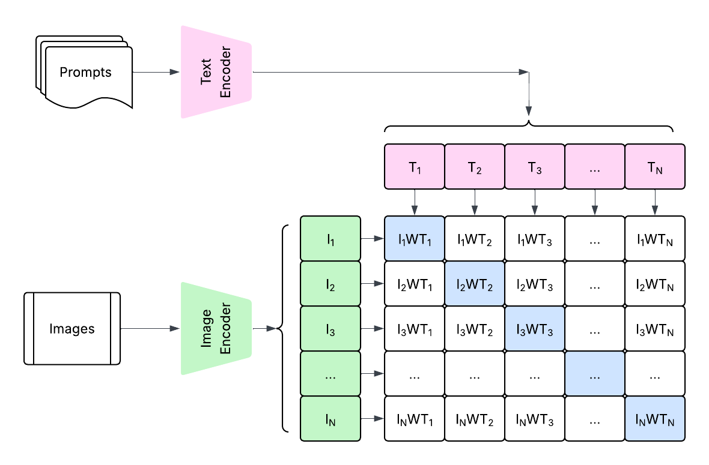

                <div class="method-caption">
                    <p><strong> Figure 1. The BiCLIP Adaptation Framework. Unlike standard
                        CLIP which relies on a fixed dot product, BiCLIP introduces a
                        trainable, structured transformation matrix W between the image
                        and text modalities.</strong></p>
<!--                    <p><strong>Figure 1. The BiCLIP Bilinear Fusion Process.</strong></p>-->
                    <p>
                        As shown in the schematic, standard Prompts and Images are projected through their respective encoders.
                        Unlike standard CLIP, which uses a direct dot product (creating a static similarity matrix),
                        BiCLIP introduces a learnable Structured Upper-Triangular Matrix (W).
                    </p>
                    <p>
                        This matrix is applied between the image features (I<sub>i</sub>) and text features (T<sub>j</sub>).
                        The final matrix of Bilinear Products (shown on the right) represents the geometrically realigned similarity scores, where the term I<sub>i</sub> W T<sub>j</sub> is computed for every pair.
                        The matrix is determined via standard loss functions used for CLIP and SigLIP.
                    </p>
                </div>
            </div>
        </section>

        <section id="results">
            <h2>Experimental Results</h2>
            <hr>
            <p><strong>Main Results (16 Shot Performance)</strong>: Performance comparison of BiCLIP across 11 diverse datasets using 16-shot adaptation. BiCLIP consistently outperforms zero-shot baselines, with particularly massive gains on specialized domains like EuroSAT and DTD.</p>

            <div class="table-container">
                <table class="results-table">
                    <thead>
                        <tr>
                            <th rowspan="2">Dataset</th>
                            <th colspan="3" class="group-header clip-group">CLIP Backbone</th>
                            <th colspan="3" class="group-header siglip-group">SigLIP Backbone</th>
                        </tr>
                        <tr>
                            <th>Zero-Shot</th>
                            <th>BiCLIP (Ours)</th>
                            <th>&Delta;</th>
                            <th>Zero-Shot</th>
                            <th>BiSigLIP (Ours)</th>
                            <th>&Delta;</th>
                        </tr>
                    </thead>
                    <tbody>
                        <tr><td>ImageNet</td><td>68.84</td><td>71.69</td><td class="delta">+2.85</td><td>74.89</td><td>76.73</td><td class="delta">+1.83</td></tr>
                        <tr><td>DTD</td><td>42.82</td><td>71.86</td><td class="delta">+29.04</td><td>62.23</td><td>73.94</td><td class="delta">+11.70</td></tr>
                        <tr class="highlight-row"><td>EuroSAT</td><td>48.22</td><td>85.13</td><td class="delta">+36.91</td><td>35.35</td><td>77.50</td><td class="delta">+42.15</td></tr>
                        <tr><td>Flowers102</td><td>70.99</td><td>94.97</td><td class="delta">+23.99</td><td>81.15</td><td>96.11</td><td class="delta">+14.96</td></tr>
                        <tr><td>FGVCAircraft</td><td>24.60</td><td>45.21</td><td class="delta">+20.61</td><td>45.99</td><td>49.41</td><td class="delta">+3.42</td></tr>
                        <tr><td>OxfordPets</td><td>89.04</td><td>93.30</td><td class="delta">+4.24</td><td>92.31</td><td>92.80</td><td class="delta">+0.49</td></tr>
                        <tr><td>Food101</td><td>88.73</td><td>90.09</td><td class="delta">+1.36</td><td>92.19</td><td>92.33</td><td class="delta">+0.14</td></tr>
                        <tr><td>Caltech101</td><td>89.93</td><td>93.97</td><td class="delta">+4.04</td><td>95.23</td><td>97.06</td><td class="delta">+1.83</td></tr>
                        <tr><td>SUN397</td><td>63.50</td><td>74.27</td><td class="delta">+10.77</td><td>65.85</td><td>74.24</td><td class="delta">+8.38</td></tr>
                        <tr><td>UCF101</td><td>68.07</td><td>82.95</td><td class="delta">+14.88</td><td>71.50</td><td>78.85</td><td class="delta">+7.35</td></tr>
                        <tr><td>StanfordCars</td><td>63.71</td><td>82.63</td><td class="delta">+18.92</td><td>88.81</td><td>92.12</td><td class="delta">+3.31</td></tr>
                    </tbody>
                    <tfoot>
                        <tr class="average-row">
                            <td><strong>Average</strong></td>
                            <td>63.31</td>
                            <td>80.55</td>
                            <td class="delta"><strong>+15.24</strong></td>
                            <td>72.33</td>
                            <td>81.92</td>
                            <td class="delta"><strong>+8.69</strong></td>
                        </tr>
                    </tfoot>
                </table>
            </div>
        </section>

        <section id="few-shot">
            <h2>Few-Shot Classification Performance</h2>
            <hr>
            <p class="section-description">
                We conduct experiments across the standard 1, 2, 4, 8, and 16 shots settings.
                Figure below illustrates the performance curves of BiCLIP and BiSigLIP
                compared to five state-of-the-art baselines, including classic Linear Probe adaptation
                methods, prompt tuning variants CoOp and CoCoOp, and more recent
                multimodal prompt learning techniques like MaPLe and PromptSRC.
            </p>

            <div class="plots-grid">
                <div class="plot-item featured">
                    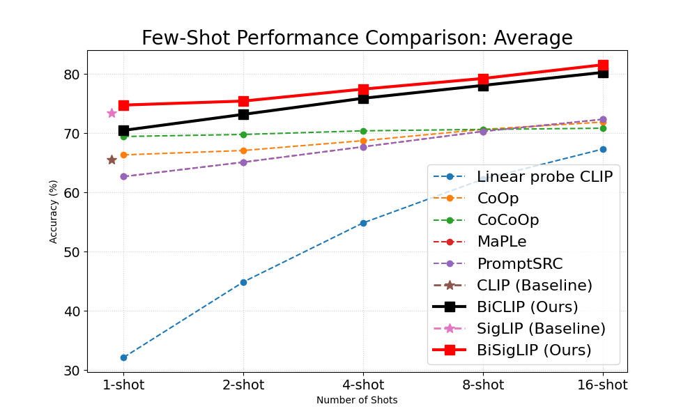
                    <span class="plot-label">Average (All Datasets)</span>
                </div>

                <div class="plot-item">
                    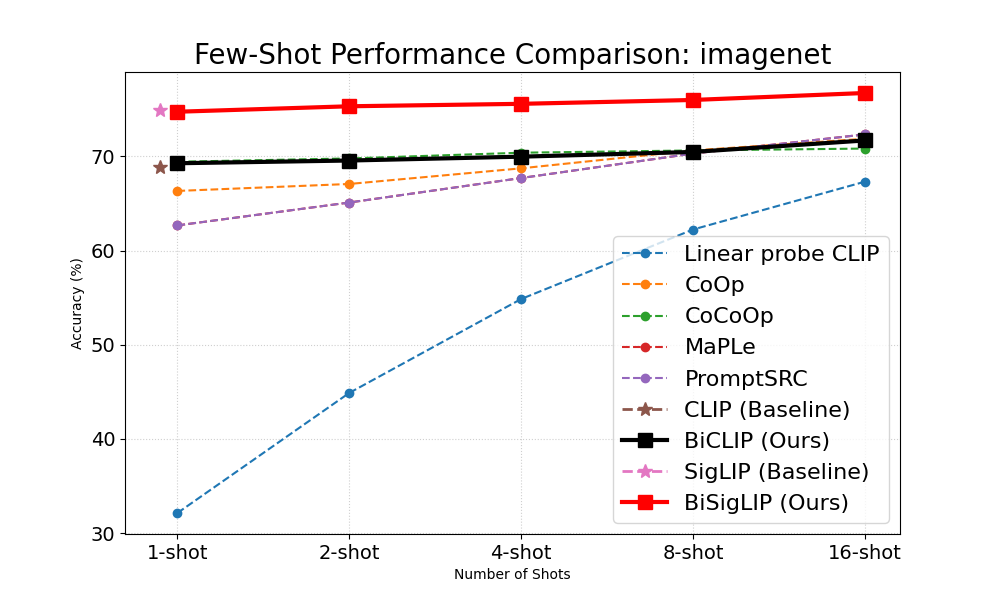
                    <span class="plot-label">ImageNet</span>
<!--                </div>-->
<!--                <div class="plot-item">-->
                    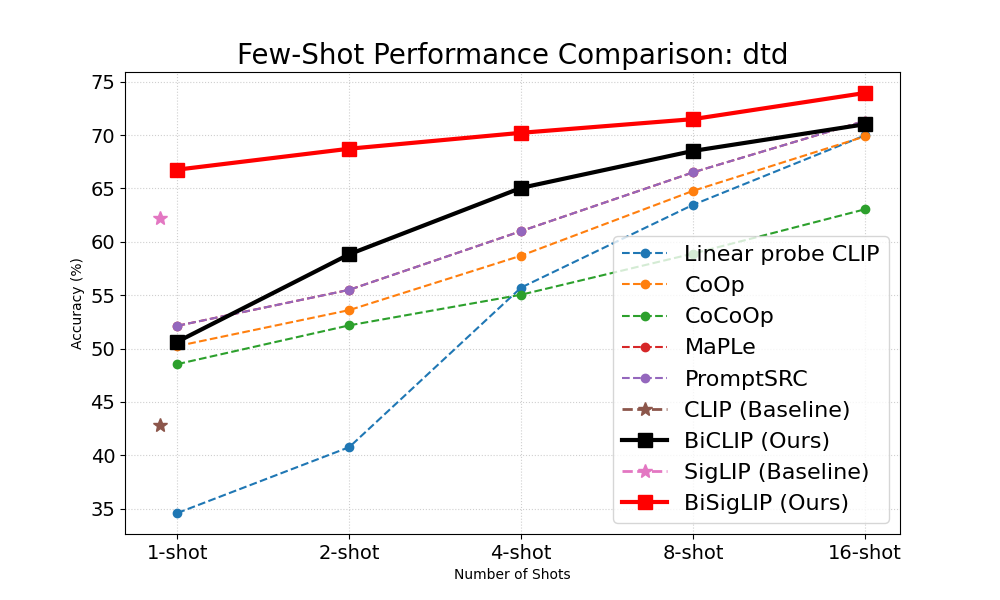
                    <span class="plot-label">DTD</span>
                </div>
                <div class="plot-item">
                    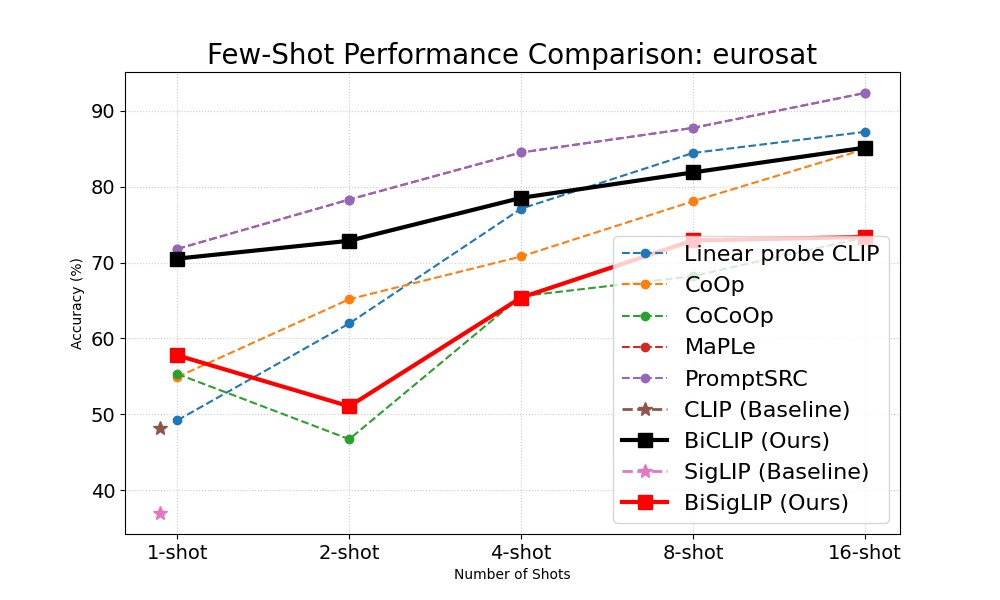
                    <span class="plot-label">EuroSAT</span>
                </div>
                <div class="plot-item">
                    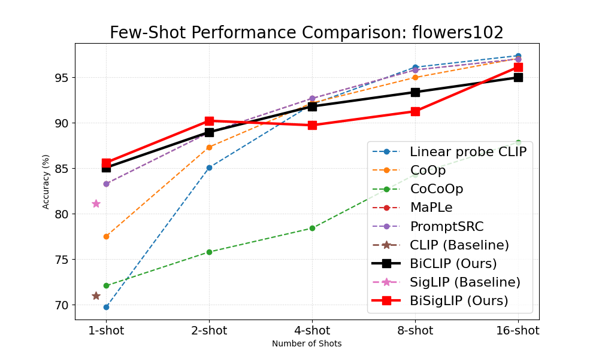
                    <span class="plot-label">Flowers102</span>
                </div>
                <div class="plot-item">
                    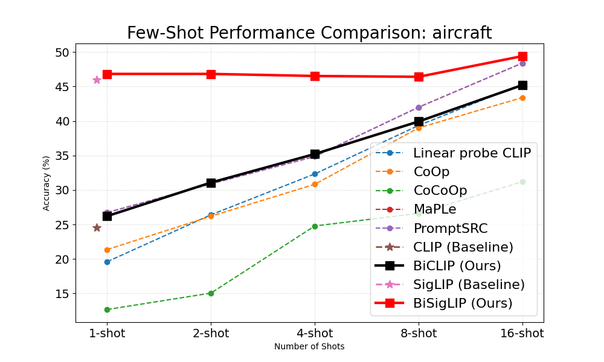
                    <span class="plot-label">FGVC Aircraft</span>
                </div>
                <div class="plot-item">
                    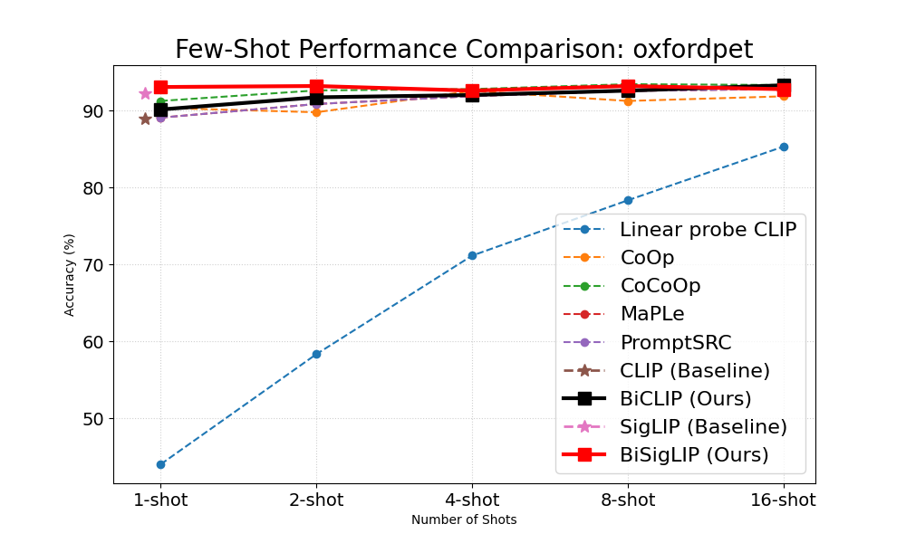
                    <span class="plot-label">OxfordPets</span>
                </div>
                <div class="plot-item">
                    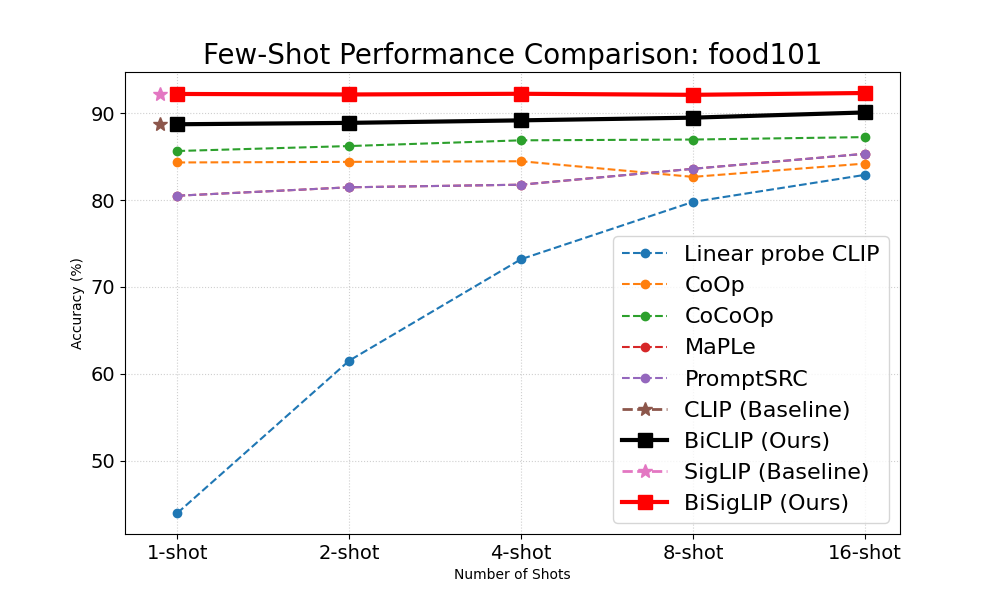
                    <span class="plot-label">Food101</span>
                </div>
                <div class="plot-item">
                    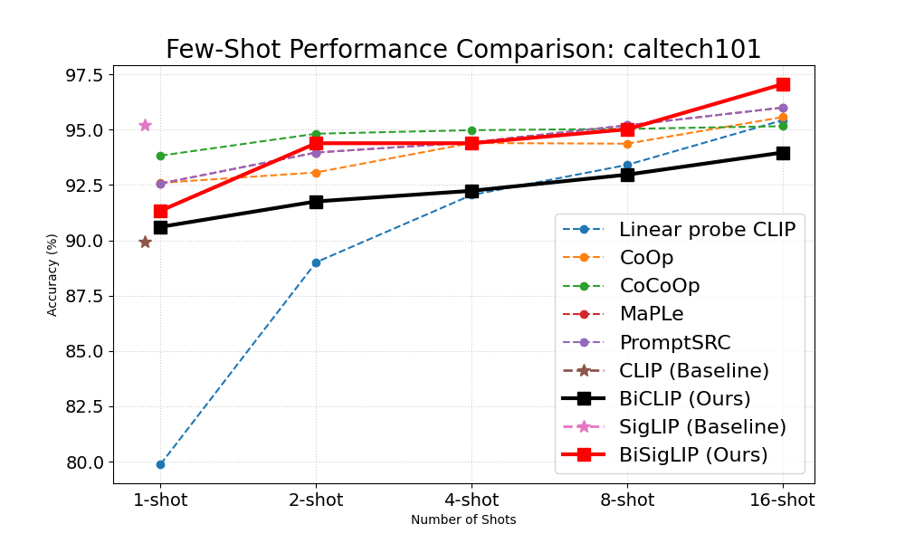
                    <span class="plot-label">Caltech101</span>
                </div>
                <div class="plot-item">
                    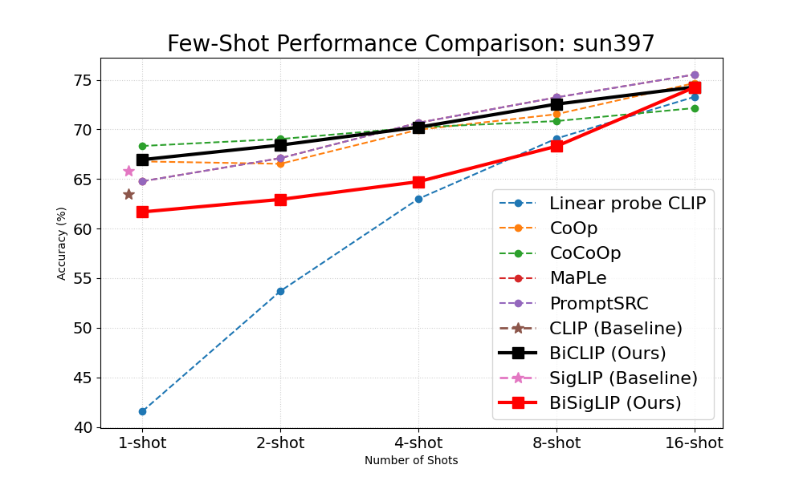
                    <span class="plot-label">SUN397</span>
                </div>
                <div class="plot-item">
                    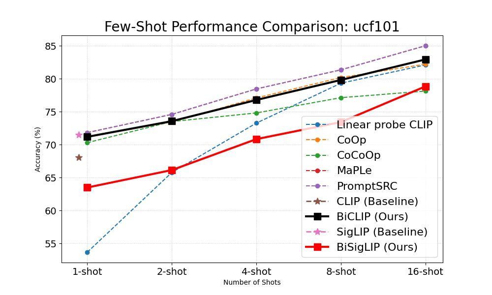
                    <span class="plot-label">UCF101</span>
                </div>
                <div class="plot-item">
                    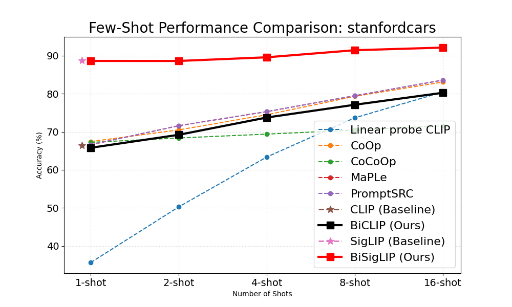
                    <span class="plot-label">StanfordCars</span>
                </div>
            </div>
        </section>

        <section id="angular-analysis">
            <h2>Angular Distribution Analysis</h2>
            <hr>
            <p>To better understand the effectiveness of BiCLIP, we analyze the angular distribution between positive and negative image-text pairs. A smaller overlap between these distributions indicates superior alignment and better class discriminability.</p>
            <p>Select a dataset to compare the angular distribution of positive and negative pairs between the CLIP baseline and BiCLIP.</p>

            <div class="selector-container">
                <label for="dataset-select"><strong>Choose Dataset:</strong></label>
                <select id="dataset-select" onchange="updatePlots()">
                    <option value="aircraft">FGVC Aircraft</option>
                    <option value="dtd">DTD</option>
                    <option value="eurosat">EuroSAT</option>
                    <option value="flowers102">Flowers102</option>
                    <option value="food101">Food101</option>
                    <option value="imagenet">ImageNet</option>
                    <option value="oxfordpet">Oxford Pets</option>
                    <option value="stanfordcars">Stanford Cars</option>
                    <option value="sun397">SUN397</option>
                    <option value="ucf101">UCF101</option>
                    <option value="caltech101">Caltech101</option>
                </select>
            </div>

            <div class="comparison-display">
                <div class="plot-box">
                    <h3>Baseline CLIP</h3>
                    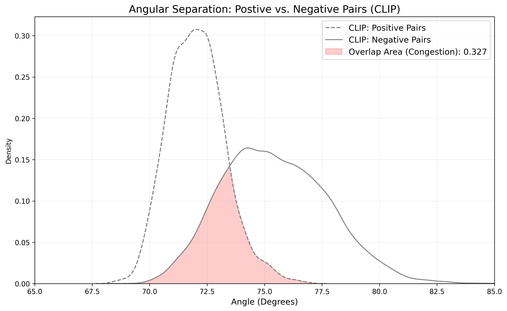
                </div>
                <div class="plot-box highlight">
                    <h3>BiCLIP (Ours)</h3>
                    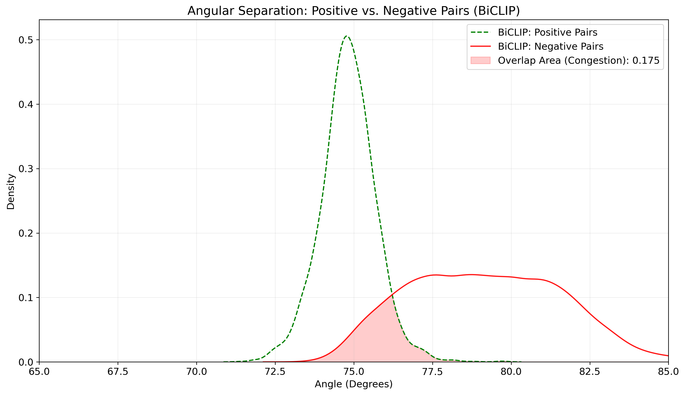
                </div>
            </div>
        </section>


        <section id="orthogonality">
            <h2>Geometric Verification: Orthogonality Analysis</h2>
            <hr>
            <p>
                Recent research (<a href="https://arxiv.org/abs/2602.17584">Gupta et. al 2026</a>) into Vision-Language Models suggests that independently trained modalities are related by a shared <strong>orthogonal map</strong>.
                Our analysis confirms that the BiCLIP transformation matrix <strong>W</strong> preserves this property, maintaining near-orthogonality even after convergence.
            </p>

                <div class="ortho-container">
                <div class="ortho-stats">
                    <div class="stat-item">
                        <span class="stat-value">0.022</span>
                        <span class="stat-label">Avg. Normalized Orthogonal Error</span>
                    </div>
                    <div class="stat-item">
                        <span class="stat-value">0.009</span>
                        <span class="stat-label">ImageNet Error</span>
                    </div>
                </div>
                <div class="ortho-explanation">
                    <p>
                        We quantify this by computing the normalized Frobenius norm deviation for W with dimensions <code>DXD</code> as:
                        <code>||WᵀW - I|| / D</code>.
                    </p>
                    <ul>
                        <li><strong>Preservation of Knowledge:</strong> On datasets like ImageNet (0.009 error) and Food101 (0.006), the error is nearly negligible, showing the manifold stays close to its canonical state.</li>
                        <li><strong>Targeted Adaptation:</strong> Specialized domains like EuroSAT (0.024) and DTD (0.055) show a slight departure from pure orthogonality, indicating necessary non-rigid "warping" to align the features.</li>
                        <li><strong>Theoretical Alignment:</strong> This empirical evidence validates that domain adaptation in VLMs is fundamentally a problem of recovering relative rotation and scaling.</li>
                    </ul>
                </div>
            </div>
        </section>

        <section id="findings">
    <h2>Experimental Findings & Theoretical Validation</h2>
    <hr>

    <div class="findings-grid">
        <div class="finding-card">
            <div class="icon">🚀</div>
            <h3>State-of-the-Art Adaptation</h3>
            <p>BiCLIP achieves an average improvement of <strong>+15.24%</strong> over zero-shot CLIP and <strong>+8.69%</strong> over SigLIP. The most significant gains occur in specialized domains, such as <strong>+42.15% on EuroSAT</strong>, proving its robustness to extreme distribution shifts.</p>
        </div>

        <div class="finding-card">
            <div class="icon">📐</div>
            <h3>Geometric Stability</h3>
            <p>Our analysis confirms that the learned transformation <strong>W</strong> remains nearly <strong>orthogonal</strong>, with an average normalized error of only <strong>0.022</strong>. This validates that BiCLIP performs a structured rotation rather than arbitrary warping.</p>
        </div>

        <div class="finding-card">
            <div class="icon">📉</div>
            <h3>Extreme Parameter Efficiency</h3>
            <p>By learning a single structured matrix, BiCLIP requires fewer parameters than state-of-the-art CLIP adaptation methods.</p>
        </div>

        <div class="finding-card">
            <div class="icon">⚖️</div>
            <h3>Domain Canonicalization</h3>
            <p>The empirical results support our hypothesis: domain shift in VLMs can be recovered by a canonical geometric transformation. This bridges the gap between pre-trained multimodal spaces and specialized visual manifolds.</p>
        </div>
    </div>

    <div class="ortho-footer">
        <p><strong>Theoretical Alignment:</strong> The near-orthogonality of <em>W</em> aligns with the Multimodal Canonicalization theory [<a href="https://arxiv.org/abs/2602.17584">Gupta et. al 2026</a>], proving that BiCLIP restores the relative alignment intended during pre-training.</p>
    </div>
</section>

        <section id="citation">
            <h2>Citation</h2>
            <hr>
            <div class="bibtex-box">
                <pre id="bibtex-text">
                @misc{mantini2026biclipdomaincanonicalizationstructured,
                  title={BiCLIP: Domain Canonicalization via Structured Geometric Transformation},
                  author={Pranav Mantini and Shishir K. Shah},
                  year={2026},
                  eprint={2603.08942},
                  archivePrefix={arXiv},
                  primaryClass={cs.CV},
                  url={https://arxiv.org/abs/2603.08942}
                </pre>
                <button onclick="copyBibtex()" id="copy-btn">Copy BibTeX</button>
            </div>
        </section>
    </main>

    <footer>
        <p>Built for the BiCLIP Research Project © 2026</p>
    </footer>

    <script>
        function copyBibtex() {
            const text = document.getElementById('bibtex-text').innerText;
            navigator.clipboard.writeText(text);
            const btn = document.getElementById('copy-btn');
            btn.innerText = "Copied!";
            setTimeout(() => btn.innerText = "Copy BibTeX", 2000);
        }
    </script>

    <script>
    function updatePlots() {
        // Get the selected value from the dropdown
        const selectedDataset = document.getElementById('dataset-select').value;

        // Get the image elements
        const clipImg = document.getElementById('clip-plot');
        const biclipImg = document.getElementById('biclip-plot');

        // Update the sources based on your naming convention
        // Ensure your files are named precisely like this in the assets folder
        clipImg.src = `assets/angular/${selectedDataset}_angular_dist_clip.png`;
        biclipImg.src = `assets/angular/${selectedDataset}_angular_dist_biclip.png`;

        // Optional: Add a subtle fade-in effect when changing
        clipImg.style.opacity = 0;
        biclipImg.style.opacity = 0;
        setTimeout(() => {
            clipImg.style.opacity = 1;
            biclipImg.style.opacity = 1;
        }, 50);
    }
    </script>
</body>
</html>